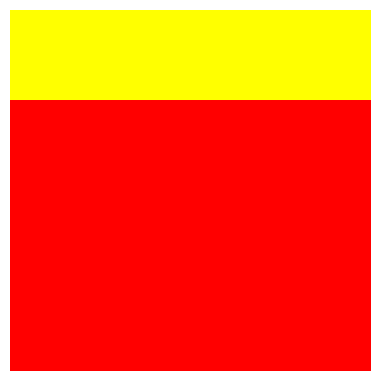

A short introduction. Each section below has its own video: the idea first, then the matching notebook steps. Captions are built in.
By the end of today you can:
- start Jupyter and run code in a notebook
- make a tensor and read its shape
- pick out and change parts of a tensor
- find the position of the biggest number in a tensor
Set Up Jupyter 0-15 min
- Follow the Setup page to make your mood-machine folder and start Jupyter.
- Download session2-starter.ipynb from the top of this page and move it into your mood-machine folder.
- Open it from the Jupyter page.
In your notebook
Click the first cell and press Shift + Enter. It should print a PyTorch version starting with 2.
Making Tensors 15-25 min
A tensor is a grid of numbers. In PyTorch, everything is a tensor: every face, every label, every weight and every guess.
Tensors can have any number of dimensions:
| Dimensions | Example | Shape |
|---|---|---|
| 1 | a list of 3 scores | (3) |
| 2 | a table with 2 rows and 3 columns | (2, 3) |
| 3 | one colour picture: 3 colours, 4 rows, 4 columns | (3, 4, 4) |
| 4 | a batch of 64 face pictures | (64, 3, 32, 32) |
Every tensor carries three facts you'll check again and again:
- shape: how many numbers in each direction
- dtype: what kind of numbers. We use
float32, which means decimals. - device: where it lives.
cpuis the PC's main processor.
blank = torch.zeros(3, 4, 4) # a tiny 4 x 4 colour picture, all black
noise = torch.rand(3, 4, 4) # the same size, filled with random numbers
In your notebook
Run section 1. In the YOUR TURN cell, make a tensor with 2 rows and 4 columns holding the numbers 1 to 8, then add up its second row.
Paint a Tiny Picture 25-40 min
Square brackets pick out parts of a tensor. Counting starts at 0. A colon : on its own means "all of them".
For a picture, the first number picks the colour grid: 0 is red, 1 is green, 2 is blue. The next two pick the row and the column.
picture = torch.zeros(3, 4, 4) # start all black
picture[0] = 1.0 # the whole red grid, turned up full
picture[1, 0, :] = 1.0 # green grid, row 0, every column
The top row now has red and green turned up, which makes yellow. The rest is red.

To draw a picture, its colour needs to be the last dimension, not the first. picture.permute(1, 2, 0) reorders the shape from (3, 4, 4) to (4, 4, 3).
In your notebook
Run section 2. In the YOUR TURN cell, make the bottom row white.
Think
What would picture[2, 1, 3] = 1.0 change? Say which colour, which row and which column, then try it.
Maths on Tensors and Batches 40-48 min
Maths on a tensor happens to every number at once. picture * 0.5 halves the brightness of every pixel in one go.
torch.stack piles pictures of the same shape into one tensor with a new dimension at the front. Three (3, 4, 4) pictures become one (3, 3, 4, 4) tensor: 3 pictures, 3 colours, 4 rows, 4 columns. The Mood Machine learns from batches of 64 faces, shape (64, 3, 32, 32).
In your notebook
Run section 3.
Meet the Faces and Find the Biggest Score 48-58 min
make_face(7) gives you two things: a picture and its mood number. You'll find out exactly how the faces are made in Session 6.
The Mood Machine will give 10 scores, one per mood. Its guess is whichever score is biggest. argmax finds the position of the biggest number:
scores = torch.tensor([0.2, -1.3, 0.1, 3.4, 0.0, 0.7, 1.1, -0.2, 0.5, 0.9])
best = scores.argmax().item() # 3, the position of 3.4
print(CLASSES[best]) # Surprised
.item() turns a one-number tensor into an ordinary Python number.
In your notebook
Run sections 4 and 5. In the last YOUR TURN cell, change the scores so the guess is Laughing.
Exit Check 58-60 min
Think
- A face tensor has shape
(3, 32, 32). What does each number mean? - What shape is a batch of 64 faces?
Answers
- 3 colour channels, 32 rows, 32 columns.
(64, 3, 32, 32).
Stretch
Paint an 8 x 8 smiley face into a tensor: yellow background, two dark eyes and a dark mouth. Draw it with plt.imshow(picture.permute(1, 2, 0)). How many numbers does your face use?